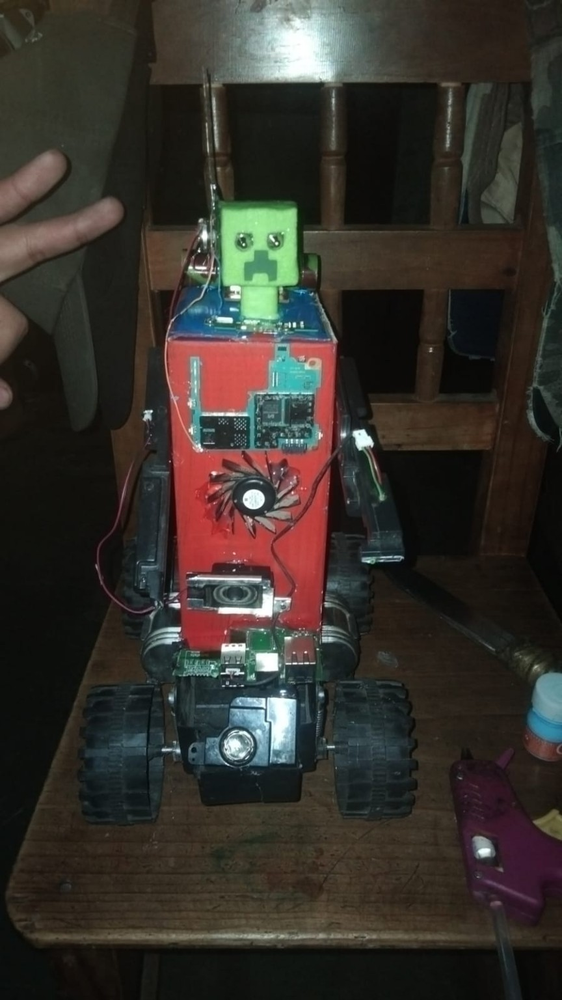

Un panel solar que le proporciona la energía necesaria para operar.
Cuenta con un sistema inteligente que identifica lugares donde existe basura electrónica.
Es ecológico, resistente, creativo e innovador. Su función principal es ayudar a reducir la contaminación ocasionada por los residuos electrónicos.
Al desechar celulares, televisiones y computadoras de manera incorrecta, se contamina el agua, el aire y el suelo.
Reciclar correctamente los aparatos electrónicos y llevarlos a centros de acopio especializados.
Muchos aparatos electrónicos son llevados a plantas de reciclaje donde se recuperan materiales como oro, plata y cobre para evitar la contaminación del medio ambiente.